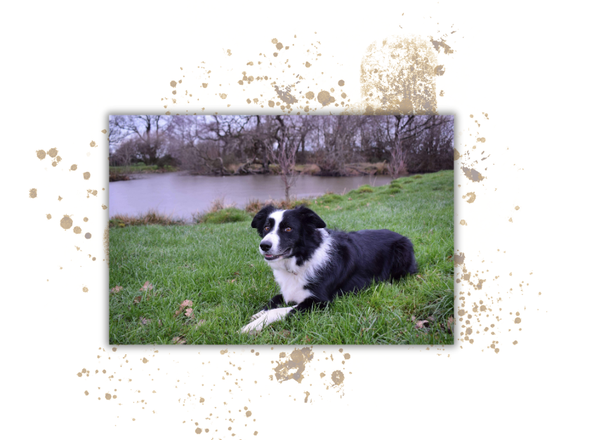
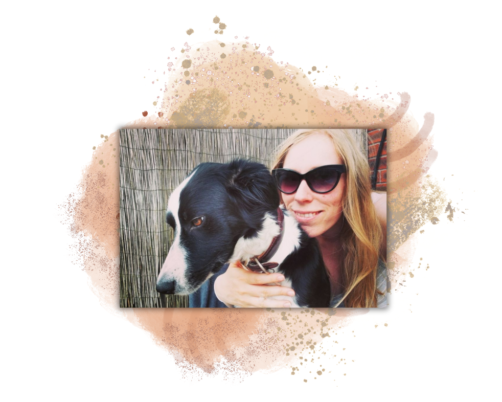
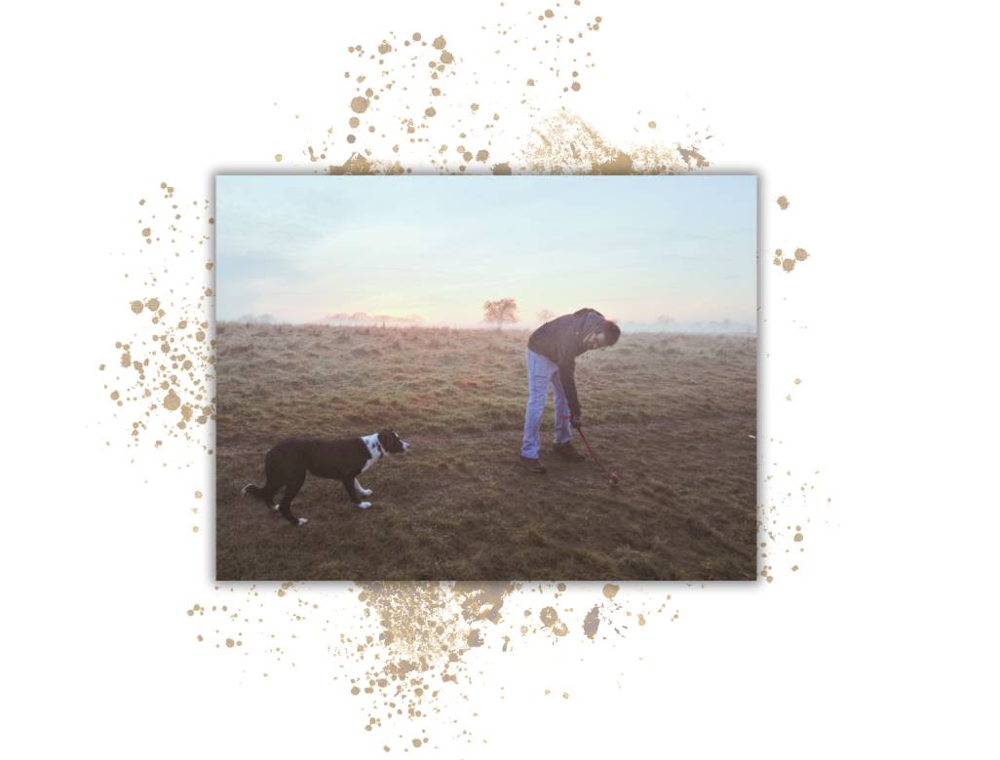
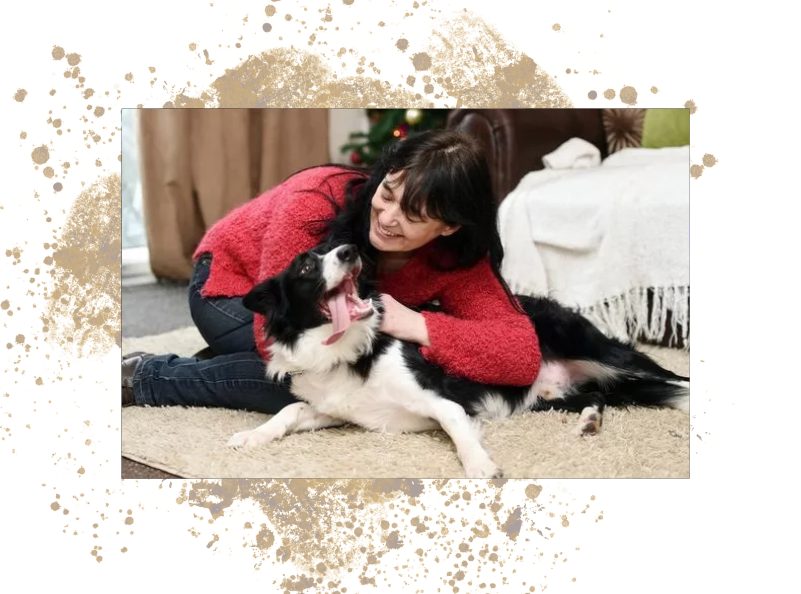
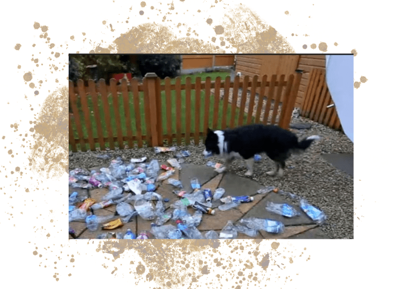

Yay or Nay? Make a Decision Today!
  If you're unsure whether owning a border collie is for you, then look no further than this fun fact filled page. My name's Elaine and I have been around and owned border collies for the majority of my life. My current collie is an 8 year old female called Skye, she lives with myself, my husband and two young kids. She is also and absolute star, such a well behaved girl and even though she has struggled with hip dysplasia you would never know as she has as much energy as a pup. She is also incredibly patient, even when being pestered by a toddler.
Key Facts and Traits
Introduction to the breed
Border Collies are a highly intelligent and energetic dog breed that was originally bred in the Scottish border regions for herding sheep and cattle. They are known for their intense focus, agility, and obedience, making them great working dogs and popular in dog sports competitions. This breed is also known for their friendly and loyal nature, making them beloved family pets. Due to their high energy and need for mental stimulation, the border collie requires an active lifestyle and plenty of exercise and training. They typically have a double coat of fur that can be black and white, red and white, or brown and white in color.
Overview of Key Traits
| Trait | Stars (5/5 = high occurence) |
| Energy Levels | ⭐⭐⭐⭐⭐ |
| Grooming | ⭐⭐⭐⭐ |
| Trainability | ⭐⭐⭐⭐⭐ |
| Exercise Needed | ⭐⭐⭐⭐ |
| Vocalisation | ⭐⭐⭐ |
Things to Note
As mentioned above collies are a high energy breed, though I have found that they do calm down a lot after their first few years. That said, each have their own personalites and little foibles so you need to get to know the individual dog and their needs.
They drop their entire coat around a couple of times a year and shed year round. This is challenging as it is hard to keep on top of all the hair. It does get everywhere. I have found that using a Furminator grooming comb is super helpful for keeping on top of it all.
Collies are so intelligent and really pick up on your verbal and physical cues this can make them difficult to deal with but it also makes them wonderful to train. If you've ever seen working collies in action herding sheep you'll know how responsive they are to training and working with their owners.
The breed are known for needing a lot of exercise I have seen some sites suggesting they need 2 hours a day. While this would be ideal if you have an older border collie like me, you find that the most important thing they really want is your company all day. Of course though, they are always, always up for a walk.
Collies are definitely vocal but they are not 'yappy' like some smaller breeds. They can also make some interesting 'fed up' groans and grumbles when they want you to take them out somewhere which can be quite amusing.
Negative Behaviours
Some collies can be a bit 'nippy' as they are a herding breed they can try to herd small children or nip at people's heels if they're running. Every collie is different so don't let this put you off, we have found that our girl has never been like that but it is something to note.
As they are so intelligent collies can get bored leading to destructive behaviours around the house like chewing things, just something to be aware of. They can also become obsessed with certain things, for Skye it's balls. This isn't too much of a problem we just make sure there aren't any around the house or she will just be waiting for us to throw it. Collies just have such great focus that if they do become obsessed with something it will take all of their attention meaning that they will trample through anywhere to fetch a ball for instance, even if it could be dangerous.
Why Collies are Amazing
Here are just a few stories of collies living up to their intelligent, sensitive and aweseome reputation:
Collie who sniffed out cancer
 Ted Save His Owner's Life by Sniffing out Her Undiagnosed CancerEnviromentally conscious collie
 Recycling border collie helps clear up rubbish during walks (The Independent)Award winning rescue collie
 Rescue dog receives 'animal OBE' for outstanding service (The Independent)
Rescue dog receives 'animal OBE' for outstanding service (The Independent)
Getting a Border Collie
Don't just take my word for it! Make sure you do plenty of your own research and ensure you have the time, space and energy for one of these beauties in your life. If you'd like to adopt a collie or support some charities who look after them, see the links below.